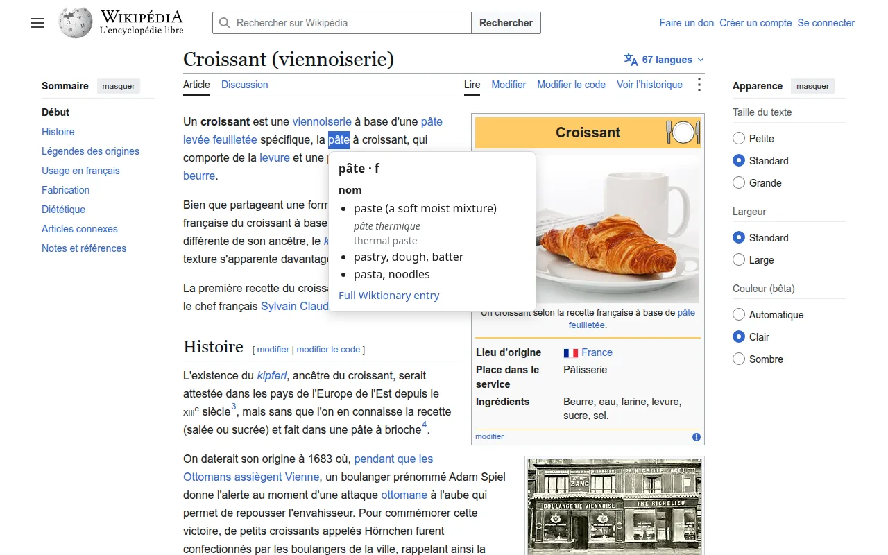
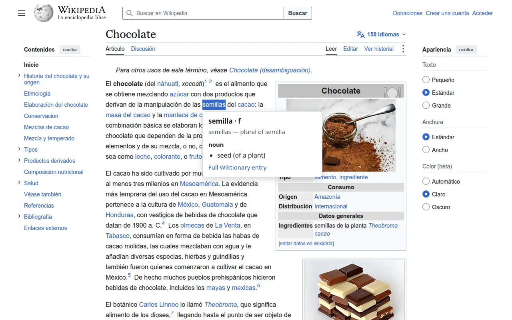
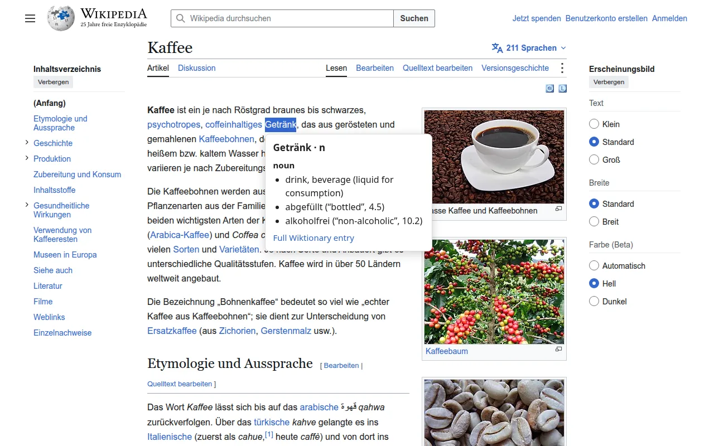
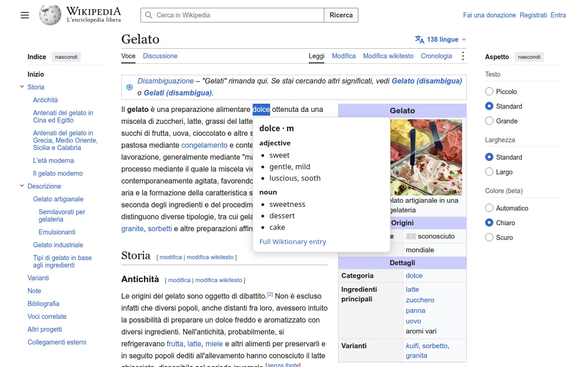
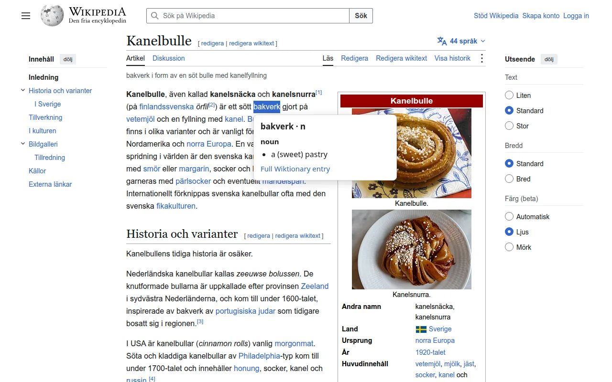

Select a word on any webpage to see its definition in a small popup beside it—no new tab needed. Word Lookup supports English, French, Spanish, German, Italian, Dutch, Swedish, and Romanian.
Features
- Definitions in place — Parts of speech, definitions, and example sentences from English Wiktionary, with a link to the full entry.
- Inflected forms — Selecting an inflected form also shows the base word's definitions. Show all forms fetches the other base words when a form comes from more than one.
- Noun gender — Optionally shows the gender of nouns for supported languages.
- History — Keeps your last 100 lookups, with links to Wiktionary. You can clear it at any time.
- Settings — Turn lookups, examples, noun genders, the loading indicator, and “no entry found” messages on or off.




Privacy
The selected word is sent to English Wiktionary for its definition, and to Apertium only when noun genders are enabled. Word Lookup has no server of its own. Your settings and lookup history stay in your browser; failed lookups are not recorded.
Credits
Definitions and examples come from English Wiktionary contributors and are available under CC BY-SA 4.0. Noun analysis is provided by Apertium. Word Lookup is not endorsed by or affiliated with the Wikimedia Foundation.